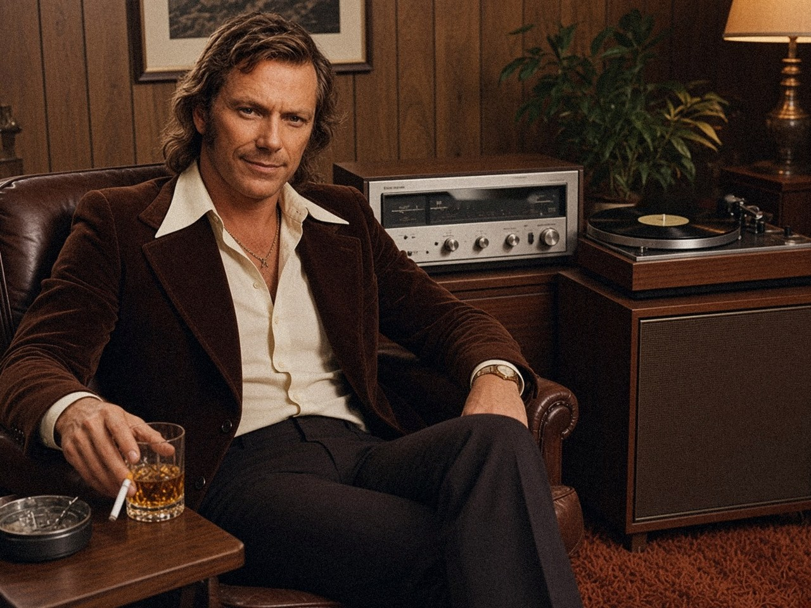
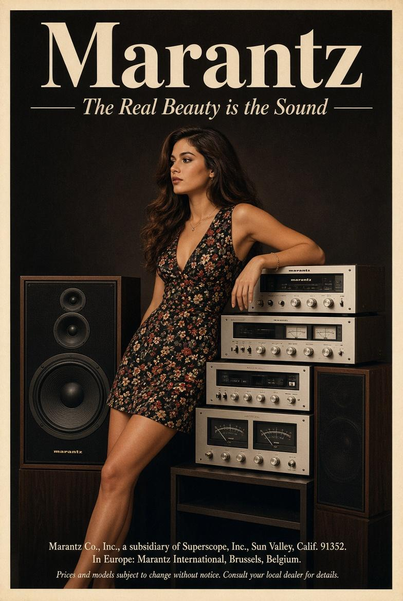
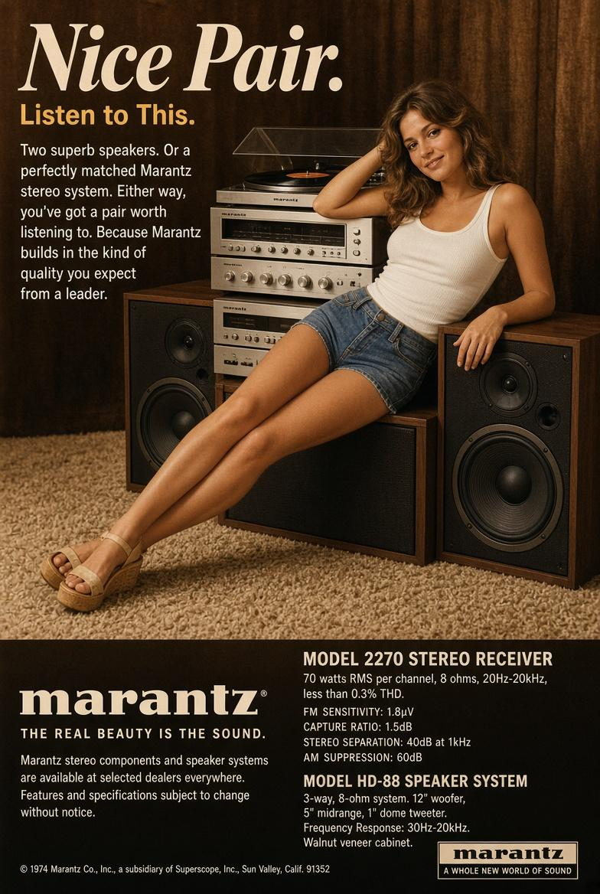
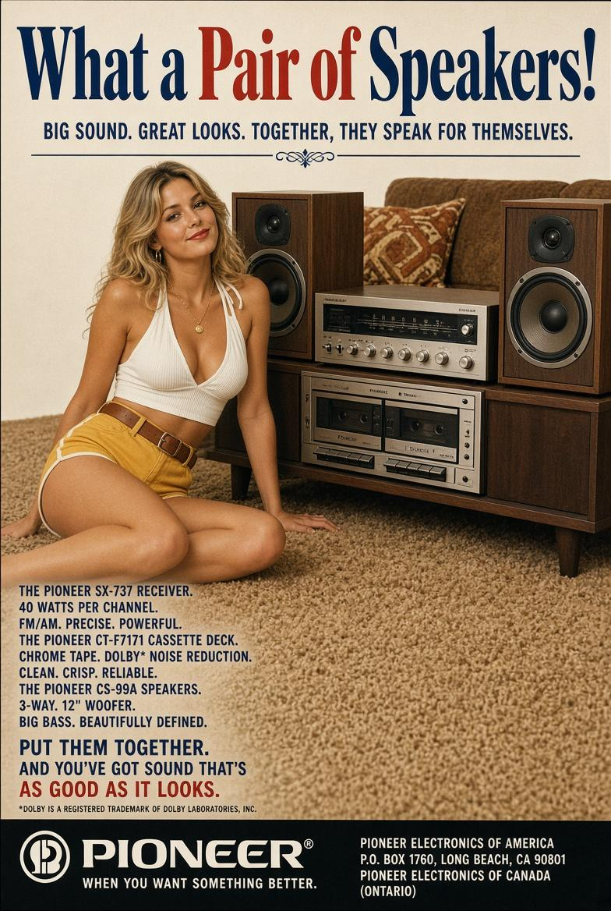
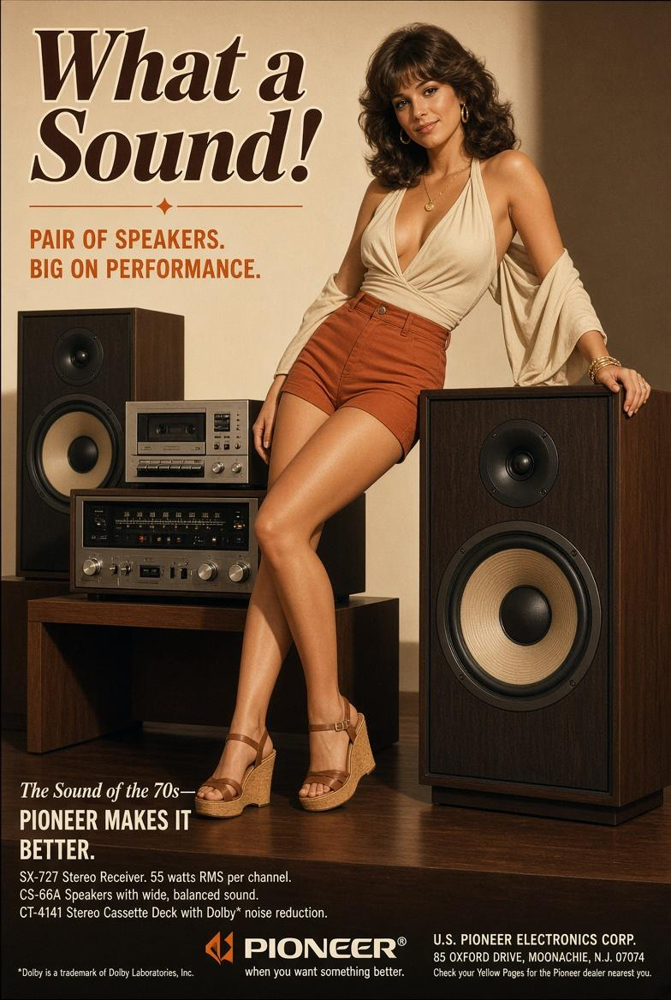
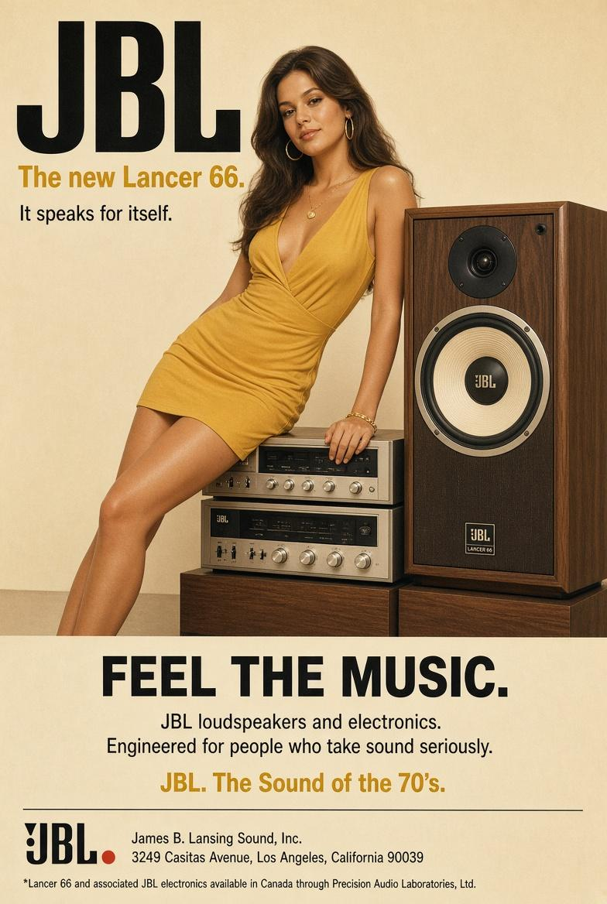
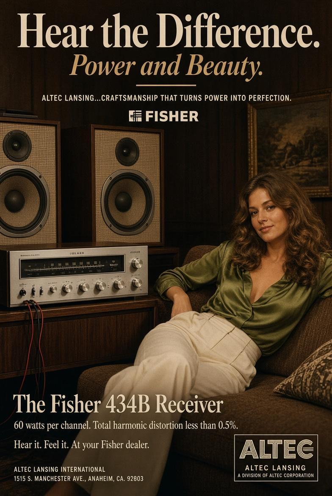
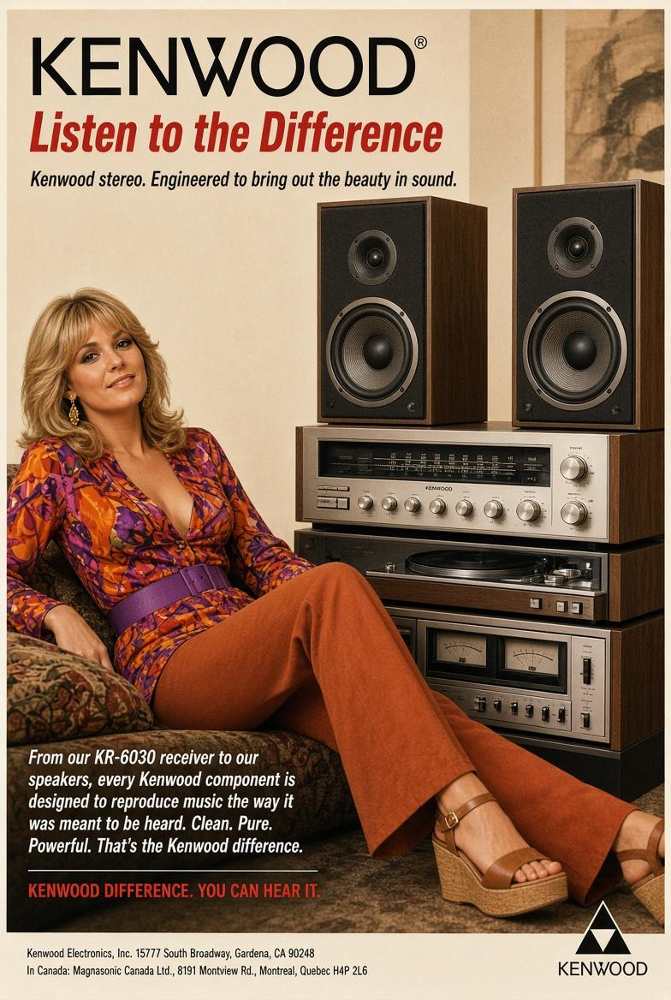
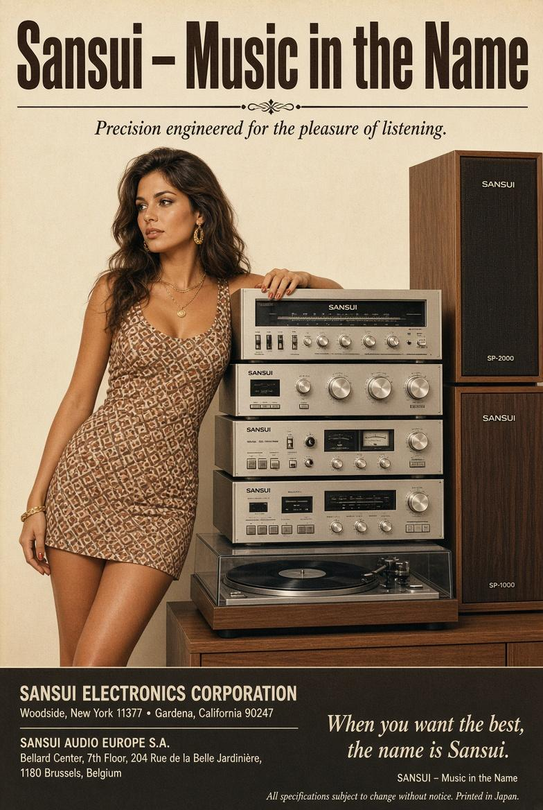

Portfolio · The work that pays the rent
The Award Shelf
Shown as they were printed. Orbit took the Golden Starburst in 1974. The other pages paid the rent.

A word from the Ad Man
Come in. The receiver is already warm.
You’ve found the crate. I used to promise that a silver receiver could improve the evening, the marriage, and possibly the den. Between us: the receivers really were that heavy.
Have a look. I’ll be in the chair. The record is already on.
— Gautier van der Poppelen, the Ad Man
Creative Director
The ads themselves, with the names and models as they appear on the page.

Magazine ad · Technics by Panasonic
Technics — The Sound of Science
SL-1200, SA-700, SB-700. “Precision engineered. Pure pleasure.”

Magazine ad · Marantz
Marantz — The Real Beauty is the Sound
A stacked Marantz system. The page names Marantz Co., Inc., Sun Valley, Calif.

Magazine ad · 1974 · Marantz
Nice Pair. Listen to This.
Model 2270 and HD-88, as printed. © 1974 Marantz Co., Inc.

Magazine ad · Pioneer
What a Pair of Speakers!
SX-737, CT-F7171 and CS-99A. “When you want something better.”

Magazine ad · Pioneer
What a Pair!
A Pioneer stack. The body copy does not print model numbers.

Magazine ad · Pioneer
What a Sound!
SX-727, CS-66A and CT-4141. “The Sound of the 70s.”

Magazine ad · JBL
JBL — The new Lancer 66
“It speaks for itself.” The badge reads Lancer 66.

Magazine ad · Fisher / Altec Lansing
The Fisher 434B Receiver
“60 watts per channel.” The page also carries Altec Lansing branding.

Magazine ad · Yamaha
Yamaha — Natural Sound
A CR-620 and YP-211, with Yamaha speakers. “Stereo that sounds like music.”

Magazine ad · Kenwood
Kenwood — Listen to the Difference
The KR-6030, in a stack. “Kenwood difference. You can hear it.”

Magazine ad · Sansui
Sansui — Music in the Name
A stacked Sansui system, SP-2000 and SP-1000. “When you want the best, the name is Sansui.”

Magazine ad · Roomspan
It reaches.
A comically long run of speaker cable.

Magazine ad · Goldstrand
Listen to the jacket.
Seen from above, the gold cable loops around her wrists like a ribbon, against a cosmic starburst.

Magazine ad · Westgauge
Twelve. Not ten.
A fat colourful 12-gauge next to a skinny grey cable.
Magazine ads · Orbit Reel Co. · Golden Starburst, 1974
Stay in orbit.
A reel machine, a speaker, a stylus and a turntable. The payoff is the same on every page.

Magazine ad · Orbit
Both reels.
A walnut open-reel machine as twin moons. Payoff: Stay in orbit.
![Vintage magazine ad headed ORBIT / It has a pull. An eye-level shot of a woman in a metallic gold jumpsuit sitting side-saddle on a slim walnut floorstanding speaker with chrome trim, her feet on the floor, looking straight into the camera, against a gold starburst and a teal-to-magenta cosmic backdrop. A small ORBIT planet logo sits at the bottom left, with a narrow column of speaker specs at the right. Body copy: A walnut cabinet with a gravity of its own. The campaign payoff reads Stay in orbit.](../ads/img/ad-orbit-speaker.webp?v=3)
Magazine ad · Orbit
It has a pull.
A slim walnut column at seat height. “A walnut cabinet with a gravity of its own.”
![Vintage magazine ad headed ORBIT / It never skips. In close-up, a woman with a dark 1970s beehive, in a metallic copper blouse, offers a chrome-and-black phono cartridge toward the camera; the stylus is large and sharp in the foreground, her face slightly softer behind it, against a gold starburst and a teal-to-magenta cosmic backdrop. A small ORBIT planet logo sits at the bottom left, with a narrow column of stylus specs at the right. Body copy: A diamond that stays in the groove. Even when the dancing doesn’t. The campaign payoff reads Stay in orbit.](../ads/img/ad-orbit-stylus.webp?v=3)
Magazine ad · Orbit
It never skips.
“A diamond that stays in the groove. Even when the dancing doesn’t.”
![Vintage magazine ad headed ORBIT / One revolution. A walnut-and-silver turntable fills the foreground, its spinning record ringed with gold light like a planet; a woman in a metallic teal top reaches down toward the platter from above, against a gold starburst and a teal-to-magenta cosmic backdrop. A small ORBIT planet logo sits at the bottom left, with a narrow column of turntable specs at the right. Body copy: A platter that finds its speed and keeps it. The campaign payoff reads Stay in orbit.](../ads/img/ad-orbit-turntable.webp?v=3)
Magazine ad · Orbit
One revolution.
A platter seen as a ringed planet. “A platter that finds its speed and keeps it.”
Shown as printed. Brand names are taken from the pages. Orbit, Roomspan, Goldstrand and Westgauge are invented. Not affiliated with the companies named in the ads.
← Back to the lobby